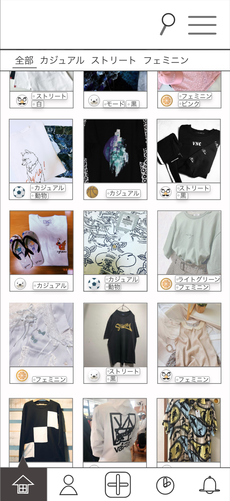

TYPE

服をジャンルや色から探したい人、好きな系統の服を取り扱っている店を知りたい人に向けた、
お店共有アプリケーション
作成時期 : 2019年06月
作成時間 : 20時間
使用ソフト : Illustrator, Xd
ターゲット : 服をジャンルや色から探したい人、好きな系統の服を取り扱っている店を知りたい人

好きな服の系統に対する、知識の構築を
このブランドが作る服が好きだけど、
似た系統のブランドってないのだろうか。どうやって探したらいいのかわからない。そんなことを感じたことはないでしょうか。
そんな疑問を解決できるのが、投稿型のお店共有アプリケーション、「TYPE」。
好きな服の系統や色をタグとして登録し、設定を行うことで簡単に見たい自分好みの服だけを見ることができ、自分好みの知識を広げることができます。
いつでもお気に入り、新たな発見を
気になった投稿をお気に入りすることで、いつでも閲覧することができます。
© 2019 by HARUNA ICHIKAWA.